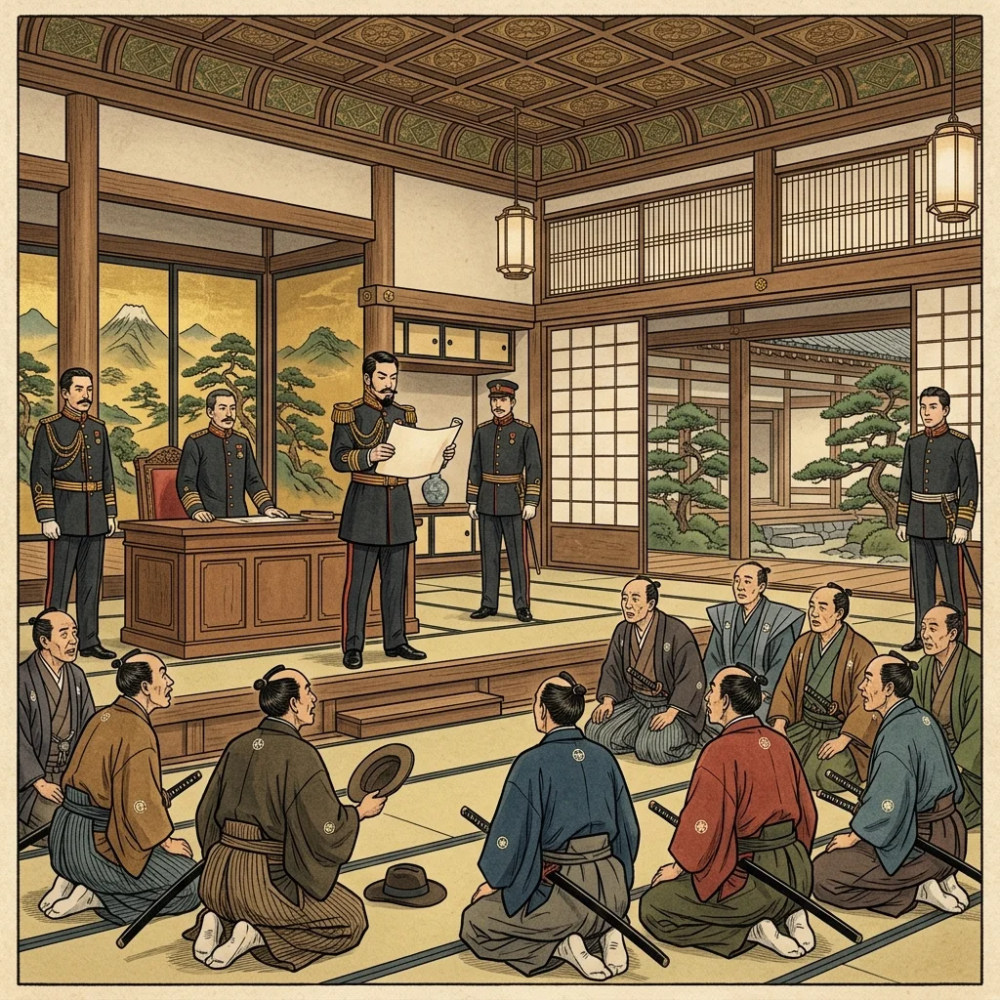
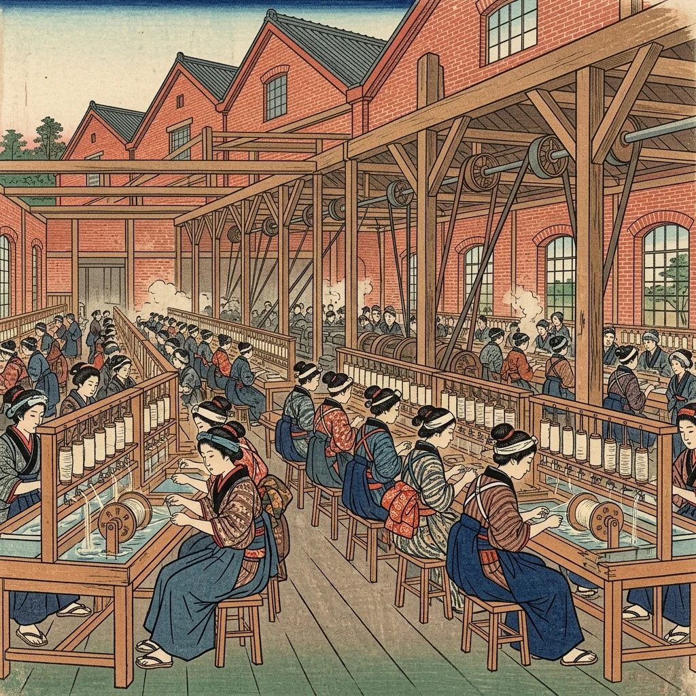

22. 明治維新と近代国家への改革
江戸幕府が滅亡し、新しく誕生した明治新政府は、欧米列強に対抗するために日本を急速に近代化する大改革を行いました。これを「明治維新（meいじいしん）」と呼びます。今回は、日本の社会や制度を根本から変えた新政府の政策と、西洋文化が押し寄せてきた「文明開化」の様子を詳しく見ていきましょう！
1. 中央集権国家への歩み
新政府は、バラバラだった諸藩を廃止し、天皇を中心とする強力な中央集権国家（権力が政府に集まる仕組み）をつくろうとしました。
① 五箇条の御誓文（ごかじょうのごせいもん、1868年）
新政府は天皇が神に誓う形式で、新しい政治の基本方針である五箇条の御誓文を発表しました。「広く会議を興し、万機公論に決すべし（みんなで話し合って決めよう）」や「旧来の陋習を破り（古い悪いしきたりをなくそう）」などを掲げ、新しい時代にふさわしい開かれた政治を目指すことを国内に示しました。
② 版籍奉還（1869年）から廃藩置県（1871年）へ
新政府はさらに、各大名が持っていた土地（版）と人民（籍）を天皇に返還させました（版籍奉還）。しかし、これだけでは大名が依然として現地を支配し続けていたため、1871年に、軍事力を背景に強行突破の改革を行いました。これが廃藩置県（はいはんちけん）です。
大名の支配地だった「藩」を完全に廃止して「県」を置き、大名たちを失職させて東京へ集めました。代わりに政府が任命した官吏（府知事・県令）を現地に派遣して治めさせました。これにより、日本全国が政府の直接支配下に入り、中央集権体制が完成しました。

図1：全国の「藩」をなくして「県」を置き、大名を東京へ集めた「廃藩置県」のイメージ
2. 身分制度の改革（四民平等）
新政府は、江戸時代の厳しい武士・百姓・町人の身分を廃止し、四民平等（しみんびょうどう）を唱えました。皇族以外を「華族（かぞく、元大名など）」「士族（しぞく、元武士）」「平民（へいみん、農民や町人など）」とし、平民にも名字を名乗る権利、職業の自由、結婚の自由、居住の自由を認めました。
また、士族に対しては、刀を差すことを禁じる「廃刀令」や、国から支給されていた給料（秩禄）をなくす政策を行い、特権をすべて奪いました。
3. 近代国家を支える「三大改革」
政府は、「富国強兵（ふこくきょうへい）」（国を豊かにし、軍事力を強める）をスローガンに、国民の生活や国の仕組みを大きく変える３つの大改革を行いました。テストでは、この３つの改革の名称と内容がセットで非常によく狙われます！
① 学制（がくせい）の制定（1872年）
「義務教育」として、身分や男女の区別なく、6歳以上のすべての子どもに小学校教育を受けさせました。近代国家を支える優秀な人材を育てるためです。当時は授業料や学校建設費がすべて住民負担だったため、反対する農民一揆も起きました。
② 徴兵令（ちょうへいれい）の発布（1873年）
士族の武力独占をなくし、満20歳以上のすべての男子に対して、身分に関係なく兵役の義務を課しました（国民皆兵）。これにより、西洋式の近代的な国民軍がつくられました。こちらも農民から「血税だ」と反対する一揆が起きました。
③ 地租改正（ちそかいせい）の実施（1873年開始）
税金を確実に集めて政府の財政を安定させるため、土地の所有者に「地券」を配って所有権を認め、土地の価格（地価）を決定しました。そして、収穫量に応じた米での納税ではなく、「地価の3%」を「現金」で土地の所有者に納める仕組みに変えました。これにより、豊作や凶作に関係なく安定した税収が政府に入るようになりました。
4. 殖産興業（しょくさんこうぎょう）と文明開化
政府は日本の近代産業を急ピッチで育てるため、殖産興業（しょくさんこうぎょう）を進めました。
政府みずからがお金を出して西洋の最新機械と外国人技術者（お雇い外国人）を招き、手本となる工場（官営模範工場）をつくりました。その代表例が、群馬県に建てられた富岡製糸場（とみおかせいしじょう）です。ここでは多くの士族の娘たちが働き、日本の近代的な絹糸生産を支えました。また、1872年には新橋・横浜間に初めての鉄道が開通しました。

図2：フランスの技術を導入し、日本の生糸輸出を支えた官営模範工場「富岡製糸場」のイメージ
① 文明開化（ぶんめいかいか）
西洋の衣服や食べ物、生活様式、考え方が急激に人々の暮らしに入り込んできた風潮を文明開化（ぶんめいかいか）と呼びます。
都市部ではれんが造りの洋館が建ち並び、ガス灯が夜を照らし、人々は洋服を着て散髪（短髪）にし、それまで禁忌とされていた牛肉（牛鍋）を好んで食べるようになりました。また、時間や暦の数え方も、太陰暦から欧米と同じ太陽暦へと切り替えられました。
🔥 この単元のテスト対策・暗記のコツ
-
★
廃藩置県（1871年）の意義：
・記述対策：「大名を失職させ、代わりに政府が官吏（府知事・県令）を派遣して支配させることで、中央集権国家を確立した」 -
★
三大改革（学制・徴兵令・地租改正）の年号：
・学制：1872年。「いやなに（1872）義務教育学制スタート」
・徴兵令・地租改正：1873年。「人は波（1873）打つ徴兵と地租改正」 -
★
地租改正の内容（記述の超頻出ポイント）：
・必ず覚える4つのポイント！「基準は地価（収穫量ではない）」「税率は地価の3%」「納め方は現金（米ではない）」「納税者は土地の所有者（耕作者ではない）」
・目的：「豊作や凶作に関わらず、政府の税収を安定させるため」。地租改正はこの目的と仕組みが100%記述で出ます！